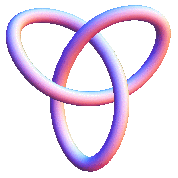
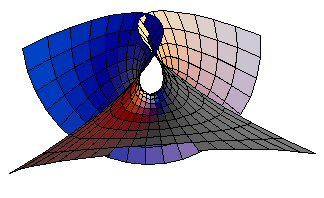
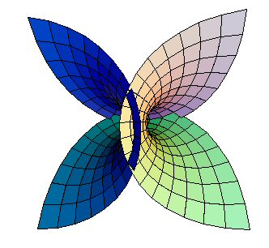

The simplest knot is the Trefoil knot.

From: http://mathworld.wolfram.com/TrefoilKnot.html
Lynnclaire's Trefoil knot has an addition loop.
(It is still a "Trefoil" knot with the added loop.)
This knot can be formed by 2 interesting helices.
(Not smooth at the 2 connecting points.)
The knot can involute around torus.
(3 loops around, twice going through the hole.)
Is this the first occurrence of a "living" system?
The knot can flex "open" and "closed".
The "open" position maps onto a Tetrahedron.
It can also map to a minimum surface: Enneper Surface.


(From: http://mathworld.wolfram.com)
We can put a sphere around this surface and trim....
Copyright September, 2007 by Robert W. Gray